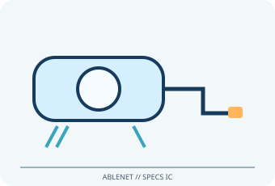

[ ADAPTIVE AND SWITCH-ACCESS CONTROLS // IDENTIFIED COMPONENT ]
AbleNet Specs IC
Low-force wired mechanical switch with a compact activation surface, tactile/audible feedback, interchangeable caps and mounting bases.

MODEL IDENTIFICATION: Product number 10000114. Confirm the exact label, regional suffix, revision, receiver/accessories, software and bundle before service or compatibility claims.
Model specifications
| Catalog subcategory | Adaptive and switch-access controls |
|---|---|
| Exact device / model / SKU | Product number 10000114 |
| Device and control operation | Pressure-operated momentary contact switch; 3.5 mm (1/8 in) mono plug presents a simple switch closure. The 6 ft (1.83 m) lead is not a USB connection. |
| Host interface | Pressure-operated momentary contact switch. |
| Switch/control inputs | Pressure-operated momentary contact switch; 3.5 mm (1/8 in) mono plug presents a simple switch closure. The 6 ft (1.83 m) lead is not a USB connection. |
| Mounting and adjustability | Interchangeable flush, flange and strap bases; supplied 24 in hook-and-loop strap supports placement on suitable flat or curved surfaces. The switch is not articulated. |
| OS / host compatibility | Any communication aid, switch interface or computer access adapter accepting a standard 3.5 mm mono switch closure. A host-side interface/software is required for USB computers; compatibility is set by that interface and OS. |
| Accessibility considerations | Small activation zone and low force can suit users with limited movement when positioned within comfortable reach. Cap color and tactile/audible click provide simple feedback. |
Accessibility and safety notes
Small activation zone and low force can suit users with limited movement when positioned within comfortable reach. Cap color and tactile/audible click provide simple feedback.
Not waterproof. Keep liquids and cleaning agents out of the housing; secure strap/base to avoid pulling or entanglement. This is an access switch, not a medical call-system control.
Document observed condition separately from manufacturer specifications. Test activation and host response in a controlled, non-safety-critical setup; record accessories, host OS, driver/app and firmware versions.
Manufacturer and support sources
- AbleNet Specs IC product pageManufacturer/support reference for model identification and setup. Confirm applicable region, hardware revision and bundle.
- AbleNet Specs Switch SupportHub and legacy documentationManufacturer/support reference for model identification and setup. Confirm applicable region, hardware revision and bundle.
Support pages and compatibility lists can change. Retain the manual revision used for a physical-device assessment.